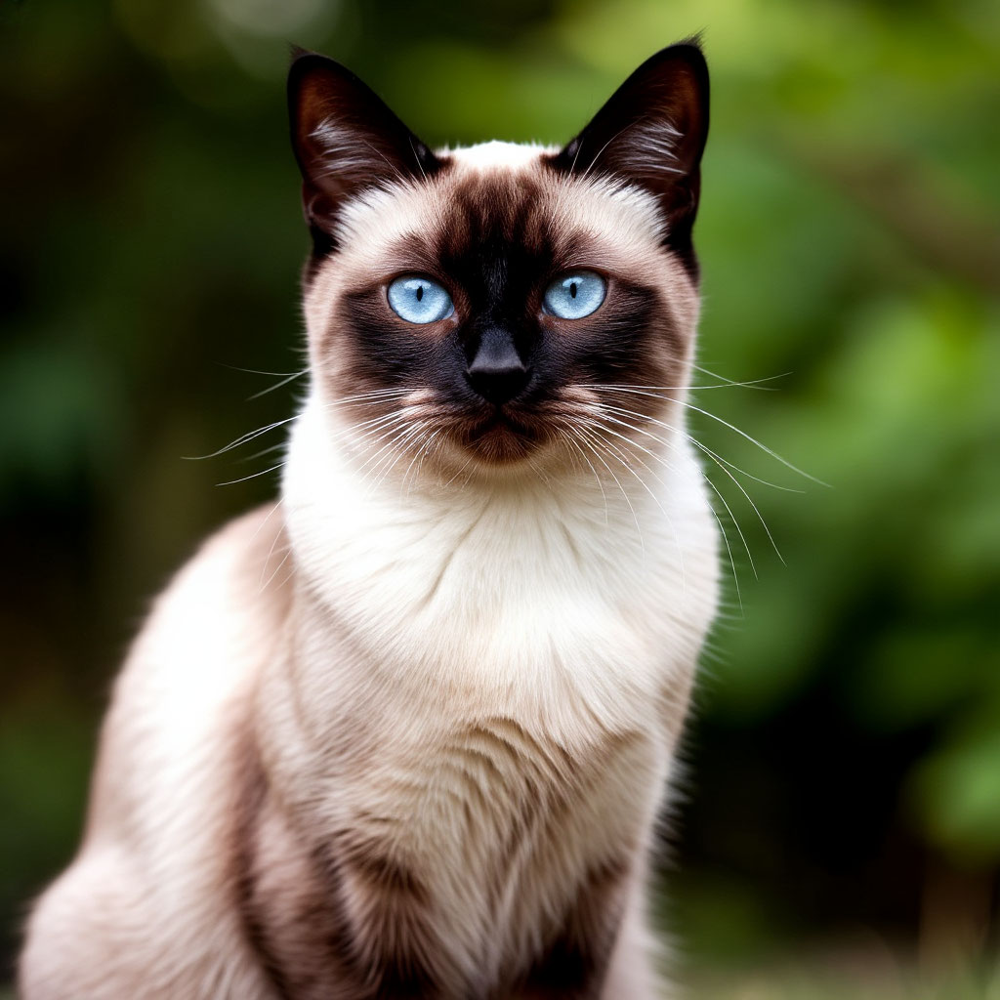
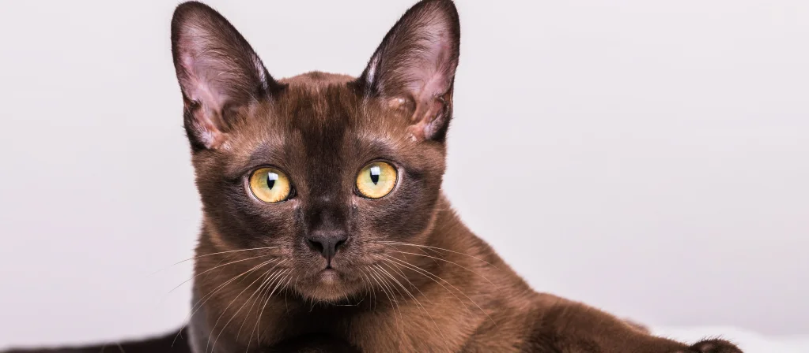
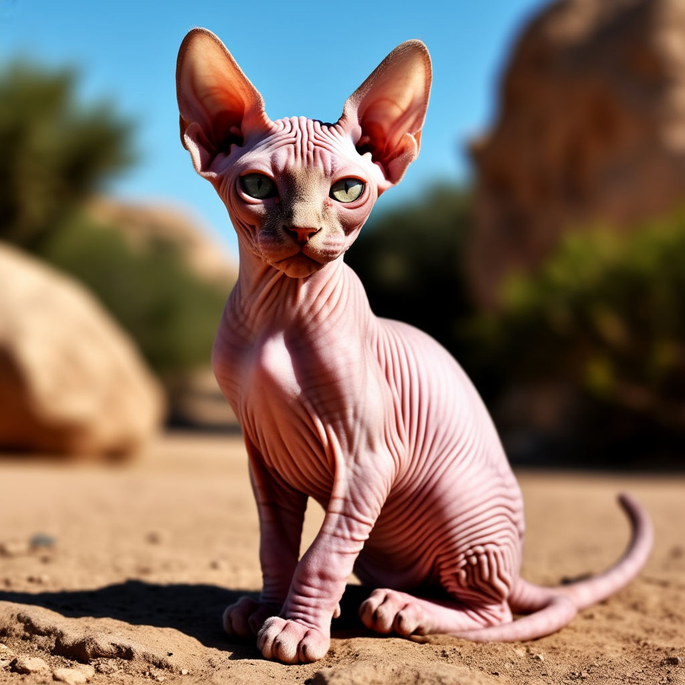

Характер кошек

Обычно кошки спокойны, общительны и привязаны к своим владельцам. Они любят ласку, игры и активное взаимодействие с человеком. Каждая кошка — уникальная личность со своим характером и привычками.
Условия содержания

Поддерживайте комфортную температуру (+20...25 °C), обеспечьте пространство для отдыха и сна, установите удобный туалет и миски для еды и воды. Обеспечьте наличие игрушек и игровых комплексов для поддержания активности питомца.
Особенности ухода

Регулярный уход включает чистку шерсти, стрижку когтей, осмотр глаз и ушей. Необходимо обеспечить сбалансированное питание, соответствующее возрасту и состоянию здоровья животного.
Не забывайте о регулярных визитах к ветеринару и своевременной вакцинации.